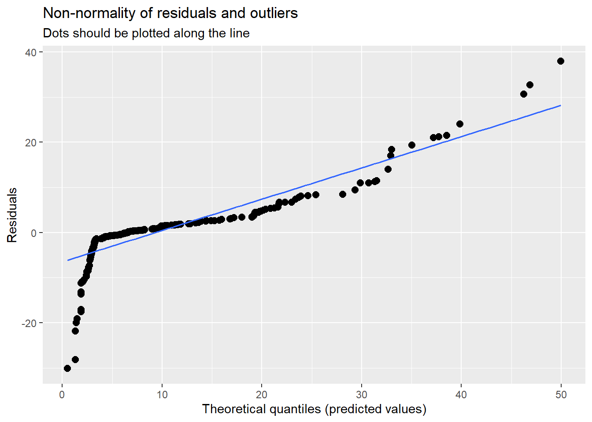
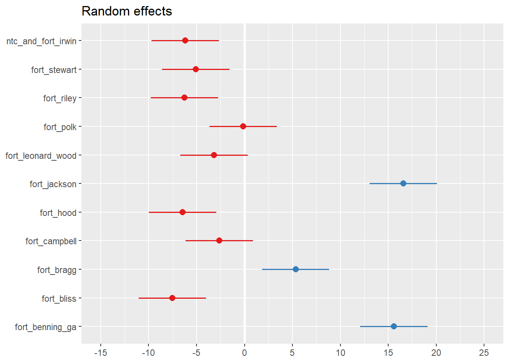

mixed_models
Annual models from DMED data.
Scope:
CONUS Army Installations:
Fort Jackson, SC
Fort Benning, GA
Fort Bragg, NC
Fort Campbell, KY
Fort Polk, LA
Fort Hood, TX
Fort Stewart, GA
Fort Leonard Wood, MO
Fort Riley, KS
Fort Irwin, CA
Fort Bliss, TX
Population: Active-duty Army service members
Outcome: Ambulatory (Out-patient)
Annual Rate of Heat Stress Illness (any type, primary diagnosis)
1997 - 2018
Exposure indices:
“Absolute” indices
Annual mean (full-year): temperature, heat index, WBGT
Annual heat risk days / hours - Heat index above 80 / 90 / 103 / 125 °F - WBGT above 82 / 85 / 88 / 90 °F
“Relative” indices (averaged over full-year and heat season months) Annual mean daily anomaly: temperature, heat index, WBGT
Annual maximum daily anomaly: temperature, heat index, WBGT
Days mean temperature index above daily climate normal percentile (averaged over all hours of day)
- temperature, heat index, WBGT above 85th / 90th / 95th percentiles
Days maximum temperature index above daily climate normal maximum percentile
- temperature, heat index, WBGT above 85th / 90th / 95th percentiles
Days mean temperature index above Standard Deviation(s) of mean daily temperature climate normal
- temperature, heat index, WBGT above 1 or 2 standard deviations of daily normal
Days maximum temperature index above Standard Deviation(s) of max daily temperature climate normal
- temperature, heat index, WBGT above 1 or 2 standard deviations of maximum daily normal
# Outcomes
dmed_tidy <-
read_rds("data/dmed_tidy.rds")
dmed_tidy## # A tibble: 11,955 x 9
## type category year count population rate location strata hsi
## <fct> <fct> <int> <dbl> <dbl> <dbl> <fct> <fct> <fct>
## 1 Ambulatory Data Male 1997 0 6057. 0 jackson gender hexhsa~
## 2 Ambulatory Data Female 1997 0 2749. 0 jackson gender hexhsa~
## 3 Ambulatory Data Total 1997 0 8806. 0 jackson gender hexhsa~
## 4 Hospitalizatio~ Male 1997 0 6057. 0 jackson gender hexhsa~
## 5 Hospitalizatio~ Female 1997 0 2749. 0 jackson gender hexhsa~
## 6 Hospitalizatio~ Total 1997 0 8806. 0 jackson gender hexhsa~
## 7 Reportable Eve~ Male 1997 0 6057. 0 jackson gender hexhsa~
## 8 Reportable Eve~ Female 1997 0 2749. 0 jackson gender hexhsa~
## 9 Reportable Eve~ Total 1997 0 8806. 0 jackson gender hexhsa~
## 10 Ambulatory Data Male 1998 0 6456. 0 jackson gender hexhsa~
## # ... with 11,945 more rows# Exposures
annual_tables_list <-
read_rds("data/annual_tables_list.rds")
annual_tables_list## # A tibble: 25 x 2
## # Groups: installation [25]
## installation data
## <chr> <list<df[,31]>>
## 1 eglin_afb [86 x 31]
## 2 fort_benning_ga [86 x 31]
## 3 fort_bliss [86 x 31]
## 4 fort_bragg [86 x 31]
## 5 fort_campbell [86 x 31]
## 6 fort_carson [86 x 31]
## 7 fort_drum [86 x 31]
## 8 fort_gordon [86 x 31]
## 9 fort_hood [86 x 31]
## 10 fort_jackson [86 x 31]
## # ... with 15 more rowsdmed_population <-
dmed_tidy %>%
filter(!location %in% c("us", "overseas"),
type == "Ambulatory Data",
hsi == "all",
strata == "gender",
category == "Total") %>%
dplyr::select(location, year, population) %>%
mutate(location = dplyr::recode(location, jackson = "fort_jackson"),
location = dplyr::recode(location, benning = "fort_benning_ga"),
location = dplyr::recode(location, bragg = "fort_bragg"),
location = dplyr::recode(location, campbell = "fort_campbell"),
location = dplyr::recode(location, polk = "fort_polk"),
location = dplyr::recode(location, hood = "fort_hood"),
location = dplyr::recode(location, stewart = "fort_stewart"),
location = dplyr::recode(location, leonardwood = "fort_leonard_wood"),
location = dplyr::recode(location, riley = "fort_riley"),
location = dplyr::recode(location, irwin = "ntc_and_fort_irwin"),
location = dplyr::recode(location, bliss = "fort_bliss"),
location = as.character(location))
index_long <-
annual_tables_list %>%
filter(installation %in% c("fort_benning_ga", "fort_bragg", "fort_campbell", "fort_jackson",
"fort_polk", "fort_hood", "fort_stewart", "fort_leonard_wood", "fort_riley",
"ntc_and_fort_irwin", "fort_bliss")) %>%
unnest(data) %>%
pivot_longer(., cols = `1990`:`2019`, names_to = "year", values_to = "value") %>%
mutate(year = as.integer(year))
hsi_rates <-
dmed_tidy %>%
filter(location %in% c("benning", "bragg", "campbell", "jackson",
"polk", "hood", "stewart", "leonardwood",
"riley", "irwin", "bliss"),
type == "Ambulatory Data",
hsi == "all",
strata == "gender",
category == "Total") %>%
dplyr::select(location, year, rate) %>%
dplyr::mutate(location = dplyr::recode(location, jackson = "fort_jackson"),
location = dplyr::recode(location, benning = "fort_benning_ga"),
location = dplyr::recode(location, bragg = "fort_bragg"),
location = dplyr::recode(location, campbell = "fort_campbell"),
location = dplyr::recode(location, polk = "fort_polk"),
location = dplyr::recode(location, hood = "fort_hood"),
location = dplyr::recode(location, stewart = "fort_stewart"),
location = dplyr::recode(location, leonardwood = "fort_leonard_wood"),
location = dplyr::recode(location, riley = "fort_riley"),
location = dplyr::recode(location, irwin = "ntc_and_fort_irwin"),
location = dplyr::recode(location, bliss = "fort_bliss"),
location = as.character(location))
joined_rate <-
index_long %>%
left_join(hsi_rates, by = c("installation" = "location", "year" = "year")) %>%
drop_na(rate)
joined_rate_pop <-
joined_rate %>%
left_join(dmed_population, by = c("installation" = "location", "year"))Plots of HSI Ambulatory Rates
dmed_tidy %>%
filter(!location %in% c("us", "overseas"),
type == "Ambulatory Data",
hsi == "all",
strata == "gender",
category == "Total") %>%
ggplot(aes(x = rate, y = fct_reorder(location,rate))) +
ggridges::geom_density_ridges(scale = 0.75) +
labs(
title = "Army Heat Stress Illness Ambulatory Rates, 1997-2018",
y = "Installation",
x = "HSI rate (per 1,000 persons per year)"
) +
theme_bw() ## Picking joint bandwidth of 2.49dmed_tidy %>%
filter(!location %in% c("us", "overseas"),
type == "Ambulatory Data",
hsi == "all",
strata == "gender",
category == "Total") %>%
ggplot(aes(x = rate, y = fct_reorder(location,rate), fill = location)) +
ggridges::geom_density_ridges(
jittered_points = TRUE,
aes(point_color = location, point_fill = location),
alpha = 0.5,
point_alpha = 1) +
labs(
title = "Army Heat Stress Illness Ambulatory Rates, 1997-2018",
y = "Installation",
x = "HSI rate (per 1,000 persons per year)"
) +
theme_bw() +
theme(legend.position = "none")## Picking joint bandwidth of 2.49dmed_tidy %>%
filter(!location %in% c("us", "overseas"),
type == "Ambulatory Data",
hsi == "all",
strata == "gender",
category == "Total") %>%
ggplot(aes(x = rate, y = fct_reorder(location,rate), fill = location)) +
ggridges::stat_density_ridges(
quantile_lines = TRUE,
jittered_points = TRUE,
aes(point_color = location, point_fill = location),
alpha = 0.5,
point_alpha = 1) +
labs(
title = "Army Heat Stress Illness Ambulatory Rates, 1997-2018",
y = "Installation",
x = "HSI rate (per 1,000 persons per year)"
) +
theme_bw() +
theme(legend.position = "none")## Picking joint bandwidth of 2.49Examine single index of heat (out of 80+ indices)
Annual hours WBGT greater than 85 deg F
joined_rate_pop %>%
filter(index %in% "hours_wbgt_gt85") %>%
ggplot(aes(x = year, y = rate)) +
geom_point() +
geom_smooth(method = lm, se = FALSE, size = 0.8) +
labs(
title = "Army Heat Stress Illness Ambulatory Rates",
x = "Year",
y = "HSI rate (per 1,000 persons per year)"
) +
theme_bw() joined_rate_pop %>%
filter(index %in% "hours_wbgt_gt85") %>%
ggplot(aes(x = year, y = value)) +
geom_point() +
geom_smooth(method = lm, se = FALSE, size = 0.8) +
labs(
title = "WBGT Hours Exceeding 85 deg F",
x = "Year",
y = "Hours WBGT > 85 deg F"
) +
theme_bw() joined_rate_pop %>%
filter(index %in% "hours_wbgt_gt85") %>%
ggplot(aes(x = year, y = rate, color = installation, shape = installation)) +
geom_point() +
geom_smooth(method = lm, se = FALSE, size = 0.8) +
labs(
title = "Army Heat Stress Illness Ambulatory Rates",
x = "Year",
y = "HSI rate (per 1,000 persons per year)"
) +
scale_shape_manual(values = 0:11) +
theme_bw() joined_rate_pop %>%
filter(index %in% "hours_wbgt_gt85") %>%
ggplot(aes(x = year, y = value, color = installation, shape = installation)) +
geom_point() +
geom_smooth(method = lm, se = FALSE, size = 0.8) +
labs(
title = "WBGT Hours Exceeding 85 deg F",
x = "Year",
y = "Hours WBGT > 85 deg F"
) +
scale_shape_manual(values = 0:11) +
theme_bw() joined_rate_pop %>%
filter(index %in% "hours_wbgt_gt85") %>%
ggplot(aes(x = value, y = rate)) +
geom_point() +
geom_smooth(method = lm, se = FALSE, size = 0.8) +
labs(
title = "Army Heat Stress Illness Ambulatory Rates",
x = "Hours WBGT > 85 deg F",
y = "HSI rate (per 1,000 persons per year)"
) +
theme_bw() joined_rate_pop %>%
filter(index %in% "hours_wbgt_gt85") %>%
ggplot(aes(x = value, y = rate, color = installation, shape = installation)) +
geom_point() +
geom_smooth(method = lm, se = FALSE, size = 0.8) +
labs(
title = "Army Heat Stress Illness Ambulatory Rates at 11 Installations (1997-2018)",
x = "Hours WBGT > 85 deg F",
y = "HSI rate (per 1,000 persons per year)"
) +
scale_shape_manual(values = 0:11) +
theme_bw() - Ambulatory HSI rates increased over time.
- WBGT temperatures increased over time.
- Slopes of HSI rate change vary by installation.
- Slopes of WBGT increase are consistent by installation (clusters below 100 hours/year and above 200 hours/year).
- HSI rates increase with the number of hours of WBGT exceeding 85 deg F.
- Slopes of HSI rate increases with hours WBGT > 85 vary by installation (among installations with the highest HSI rates).
Models
# Assign dataset; center and scale predictor value
data_hours_wbgt_gt85 <-
joined_rate_pop %>%
filter(index %in% "hours_wbgt_gt85") %>%
mutate(value = scale(value, center = TRUE, scale = TRUE))
data_hours_wbgt_gt85 %>%
ggplot(aes(x = value, y = rate, color = installation, shape = installation)) +
geom_point() +
geom_smooth(method = lm, se = FALSE, size = 0.8) +
labs(
title = "Army Heat Stress Illness Ambulatory Rates at 11 Installations (1997-2018)",
x = "Centered and Scaled Hours WBGT > 85 deg F",
y = "HSI rate (per 1,000 persons per year)"
) +
scale_shape_manual(values = 0:11) +
theme_bw() # Fitting ‘installation’ as a fixed effect in model M1 assumes
# the 11 ‘installation’ means are all independent of one another,
# and share a common residual variance
mod1_fixed_effect <- lm(rate ~ installation, data = data_hours_wbgt_gt85)
mod1a_fixed_effect <- lm(rate ~ value + installation, data = data_hours_wbgt_gt85)
# Fitting installation as a random intercept model in model M2 assumes that the 1 measured
# installation means are only a subset of the realised possibilities drawn from a ‘global’ set of
# population means that follow a Normal distribution with its own mean and variance.
mod2_random_intercept <- lmer(rate ~ 1 + (1|installation), data = data_hours_wbgt_gt85)
# Fitting only a random intercept allows group means to vary,
# but assumes all groups have a common slope for a fitted covariate (fixed effect)
mod3_random_intercept <- lmer(rate ~ value + (1|installation), data = data_hours_wbgt_gt85)
# Fitting random intercepts and slopes allows the slope of a
# predictor to vary based on a separate grouping variable.
mod4_random_intercept_slope <- lmer(rate ~ value + (value|installation), data = data_hours_wbgt_gt85)
mod5_random_intercept_yr <- lmer(rate ~ year + (1|installation), data = data_hours_wbgt_gt85)
mod6_random_intercept_yr <- lmer(rate ~ value + year + (1|installation), data = data_hours_wbgt_gt85)
mod7_random_intercept_slope_yr <- lmer(rate ~ value + year + (value|installation), data = data_hours_wbgt_gt85)## boundary (singular) fit: see ?isSingular# boundary (singular) fit
isSingular(mod7_random_intercept_slope_yr, tol = 1e-05)## [1] TRUEModel Evaluation
sjPlot::tab_model(mod1_fixed_effect, mod2_random_intercept, p.val = "kr", show.df = TRUE)| rate | rate | ||||||
|---|---|---|---|---|---|---|---|
| Predictors | Estimates | CI | p | Estimates | CI | p | df |
| (Intercept) | 25.57 | 21.83 – 29.31 | <0.001 | 9.34 | 3.96 – 14.73 | 0.007 | 10.00 |
| installation [fort_bliss] | -24.07 | -29.36 – -18.77 | <0.001 | ||||
| installation [fort_bragg] | -10.67 | -15.96 – -5.37 | <0.001 | ||||
|
installation [fort_campbell] |
-18.96 | -24.25 – -13.67 | <0.001 | ||||
| installation [fort_hood] | -22.97 | -28.26 – -17.68 | <0.001 | ||||
|
installation [fort_jackson] |
1.04 | -4.25 – 6.34 | 0.699 | ||||
|
installation [fort_leonard_wood] |
-19.53 | -24.82 – -14.23 | <0.001 | ||||
| installation [fort_polk] | -16.38 | -21.67 – -11.08 | <0.001 | ||||
| installation [fort_riley] | -22.76 | -28.06 – -17.47 | <0.001 | ||||
|
installation [fort_stewart] |
-21.53 | -26.83 – -16.24 | <0.001 | ||||
|
installation [ntc_and_fort_irwin] |
-22.67 | -27.97 – -17.38 | <0.001 | ||||
| Random Effects | |||||||
| σ2 | 79.40 | ||||||
| τ00 | 79.40 installation | ||||||
| ICC | 0.50 | ||||||
| N | 11 installation | ||||||
| Observations | 242 | 242 | |||||
| R2 / R2 adjusted | 0.499 / 0.477 | 0.000 / 0.500 | |||||
sjPlot::tab_model(mod1a_fixed_effect, mod3_random_intercept, mod4_random_intercept_slope, p.val = "kr", show.df = TRUE, show.aic = TRUE, show.ngroups = TRUE
)| rate | rate | rate | |||||||||
|---|---|---|---|---|---|---|---|---|---|---|---|
| Predictors | Estimates | CI | p | Estimates | CI | p | df | Estimates | CI | p | df |
| (Intercept) | 25.57 | 21.97 – 29.18 | <0.001 | 9.34 | 3.96 – 14.73 | 0.007 | 10.00 | 9.34 | 3.95 – 14.74 | 0.007 | 10.00 |
| value | 2.46 | 1.35 – 3.58 | <0.001 | 2.46 | 1.36 – 3.57 | <0.001 | 230.00 | 2.46 | -0.00 – 4.93 | 0.079 | 10.00 |
| installation [fort_bliss] | -24.07 | -29.16 – -18.97 | <0.001 | ||||||||
| installation [fort_bragg] | -10.67 | -15.77 – -5.57 | <0.001 | ||||||||
|
installation [fort_campbell] |
-18.96 | -24.06 – -13.86 | <0.001 | ||||||||
| installation [fort_hood] | -22.97 | -28.07 – -17.87 | <0.001 | ||||||||
|
installation [fort_jackson] |
1.04 | -4.06 – 6.14 | 0.688 | ||||||||
|
installation [fort_leonard_wood] |
-19.53 | -24.63 – -14.43 | <0.001 | ||||||||
| installation [fort_polk] | -16.38 | -21.47 – -11.28 | <0.001 | ||||||||
| installation [fort_riley] | -22.76 | -27.86 – -17.67 | <0.001 | ||||||||
|
installation [fort_stewart] |
-21.53 | -26.63 – -16.43 | <0.001 | ||||||||
|
installation [ntc_and_fort_irwin] |
-22.67 | -27.77 – -17.57 | <0.001 | ||||||||
| Random Effects | |||||||||||
| σ2 | 73.65 | 60.21 | |||||||||
| τ00 | 79.67 installation | 80.52 installation | |||||||||
| τ11 | 14.53 installation.value | ||||||||||
| ρ01 | 1.00 installation | ||||||||||
| ICC | 0.52 | 0.61 | |||||||||
| N | 11 installation | 11 installation | |||||||||
| Observations | 242 | 242 | 242 | ||||||||
| R2 / R2 adjusted | 0.537 / 0.515 | 0.037 / 0.537 | 0.036 / 0.625 | ||||||||
| AIC | 1740.898 | 1763.970 | 1723.214 | ||||||||
# with year in model
sjPlot::tab_model(mod5_random_intercept_yr, mod6_random_intercept_yr, mod7_random_intercept_slope_yr, p.val = "kr", show.df = TRUE)## Warning: Can't compute random effect variances. Some variance components equal zero.
## Solution: Respecify random structure!| rate | rate | rate | ||||||||||
|---|---|---|---|---|---|---|---|---|---|---|---|---|
| Predictors | Estimates | CI | p | df | Estimates | CI | p | df | Estimates | CI | p | df |
| (Intercept) | -1368.13 | -1676.50 – -1059.77 | <0.001 | 230.14 | -1254.81 | -1579.85 – -929.78 | <0.001 | 229.13 | -1244.37 | -1531.39 – -957.35 | <0.001 | 227.15 |
| year | 0.69 | 0.53 – 0.84 | <0.001 | 230.00 | 0.63 | 0.47 – 0.79 | <0.001 | 229.00 | 0.62 | 0.48 – 0.77 | <0.001 | 226.99 |
| value | 1.09 | 0.04 – 2.15 | 0.042 | 229.00 | 1.11 | -1.31 – 3.52 | 0.391 | 10.33 | ||||
| Random Effects | ||||||||||||
| σ2 | 59.81 | 59.00 | 45.82 | |||||||||
| τ00 | 80.29 installation | 80.33 installation | 81.05 installation | |||||||||
| τ11 | 14.30 installation.value | |||||||||||
| ρ01 | 1.00 installation | |||||||||||
| ICC | 0.57 | 0.58 | ||||||||||
| N | 11 installation | 11 installation | 11 installation | |||||||||
| Observations | 242 | 242 | 242 | |||||||||
| Marginal R2 / Conditional R2 | 0.120 / 0.624 | 0.126 / 0.630 | 0.302 / NA | |||||||||
Plot models
# Mod 1
plot(mod1_fixed_effect)
## hat values (leverages) are all = 0.04545455
## and there are no factor predictors; no plot no. 5
par(mfrow = c(2,2))
plot(mod1_fixed_effect, which = 1:4)par(mfrow = c(1,1))
par(mfrow = c(2,2))
plot(mod1a_fixed_effect, which = 1:4)
par(mfrow = c(1,1))
sjPlot::plot_model(mod1_fixed_effect)
sjPlot::plot_model(mod1a_fixed_effect)# Mod 2
plot(mod2_random_intercept)par(mfrow = c(1,1))
# Mod 3
sjPlot::plot_model(mod3_random_intercept)# Mod 4
sjPlot::plot_model(mod4_random_intercept_slope)
# Mod 5
sjPlot::plot_model(mod5_random_intercept_yr)#Mod 6
sjPlot::plot_model(mod6_random_intercept_yr)# Mod 7
sjPlot::plot_model(mod7_random_intercept_slope_yr)Predicted values
sjPlot::plot_model(mod3_random_intercept, type = "pred", terms = "value")
sjPlot::plot_model(mod3_random_intercept, type = "re", terms = "value")
sjPlot::plot_model(mod4_random_intercept_slope, type = "pred", terms = "value")sjPlot::plot_model(mod4_random_intercept_slope, type = "re", terms = "value")
sjPlot::plot_model(mod4_random_intercept_slope, type = "resid", terms = "value")sjPlot::plot_model(mod4_random_intercept_slope, type = "diag", terms = "value")## [[1]]
##
## [[2]]
## [[2]]$installation
##
##
## [[3]]
##
## [[4]]
sjPlot::plot_model(mod6_random_intercept_yr, type = "pred", terms = "value")sjPlot::plot_model(mod6_random_intercept_yr, type = "pred", terms = "year")